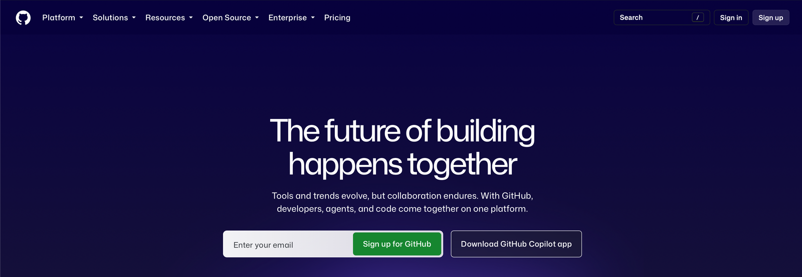
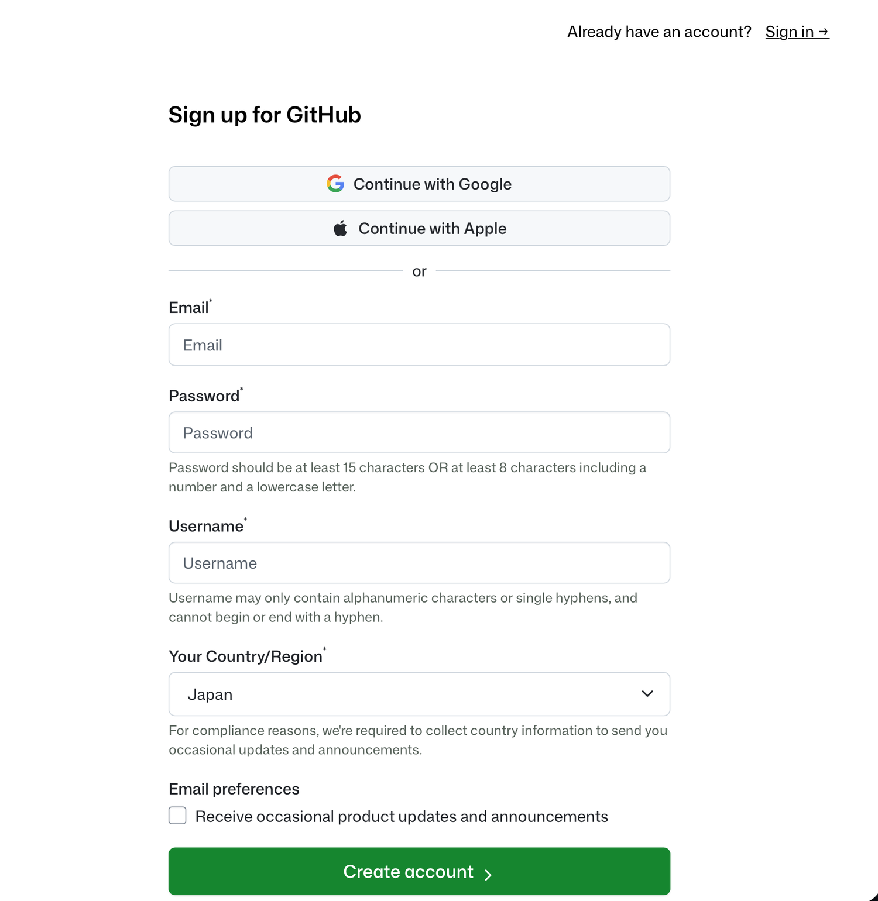
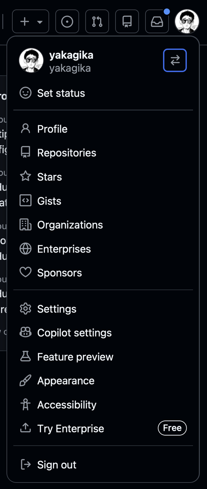
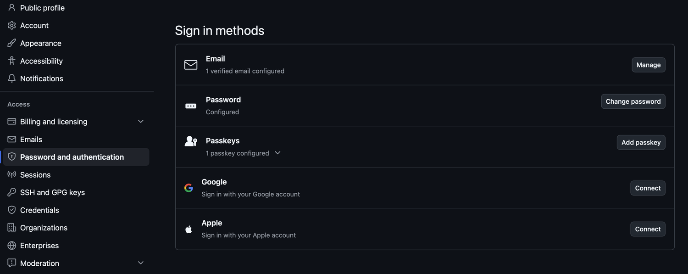
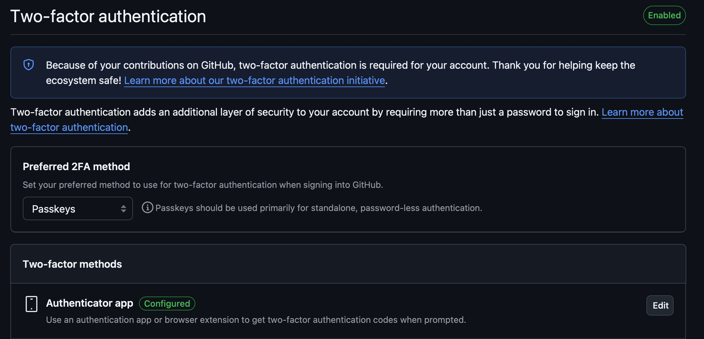
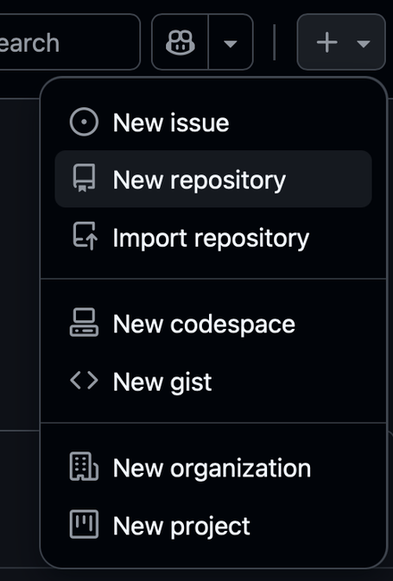
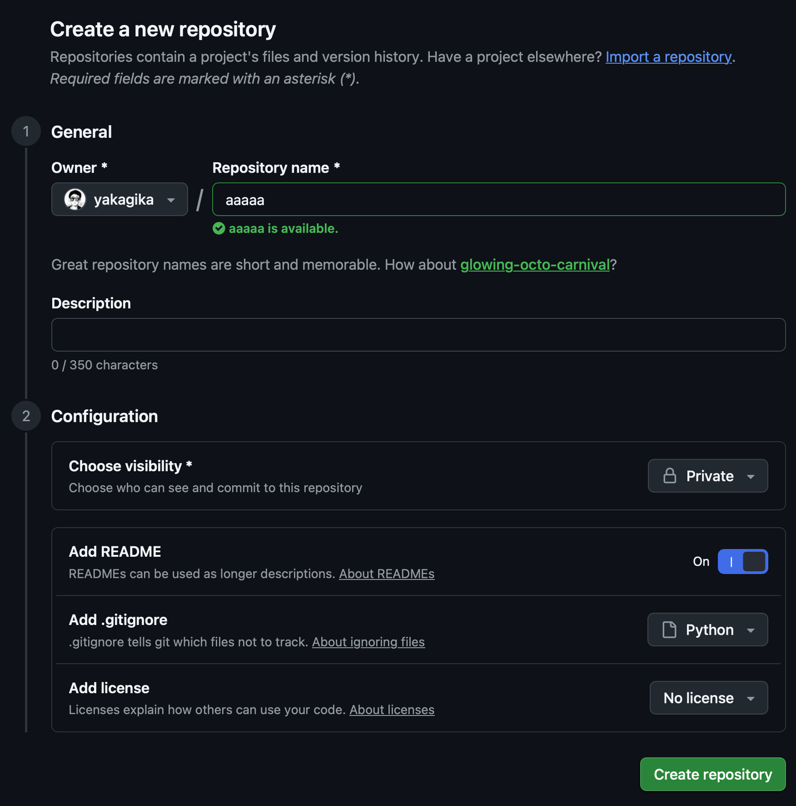
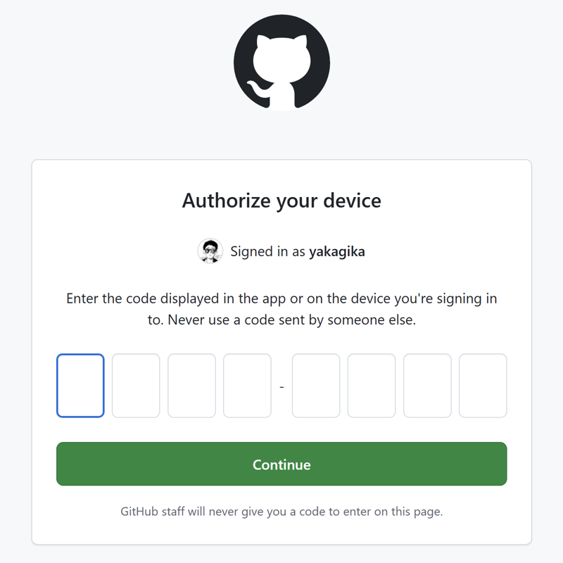
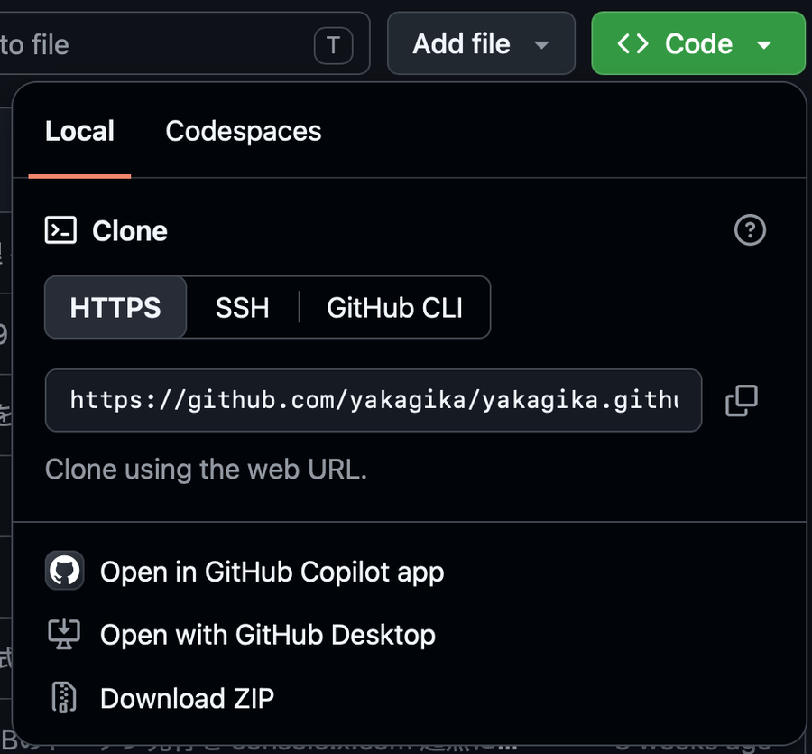

共通資料 バージョン管理とGitHub
資料
本資料は複数の講義で共通に使う資料です. コーディングエージェントに書かせた変更を確認し, 作業を記録し, 何を公開してよいかを判断するために必要な範囲の git と GitHub を扱います.
エージェント自体の導入と操作は共通資料 コーディングエージェントの利用で扱います.
なぜエージェントと git を一緒に使うのか
git は, ソフトウェアのバージョン管理の仕組みです. 変更を記録し, 記録どうしを比べ, 過去の記録の状態へ戻すために作られました. コーディングエージェントを使うと, 次の 4 つの場面でこれらの働きが必要になります.
変更の差分を読む
エージェントは, 指示を受けて手元のファイルを書き換えます. 1 回の指示で複数のファイルを同時に変更することも, 既存の行を消すこともあります.
このとき, 完成したファイルは目の前にありますが, どの行が足されどの行が消えたのかは残っていません. 変更前と見比べようにも, 変更前の状態がもう手元にありません.
git は記録どうしの差分を取れるので, エージェントが何をしたかを行単位で確認できます.
戻る場所を作る
「さっきの状態に戻して」と頼めば戻る, とは限りません. エージェントは自分が書き換える前のファイルの中身を保持していません.
エージェントとのやりとりには文脈の上限もあります. 長く続けると古いやりとりは押し出されて消えます. 文脈を切る操作 (/clear) をしたときも同じです. セッションを終了した後に会話を再開する機能 (/resume) はありますが, 再開できるのは会話であって, 書き換える前のファイルの中身ではありません.
戻れる場所を作れるのは自分だけです. エージェントに作業させる前に commit しておけば, 何が起きてもそこまでは戻れます.
並列作業とコンフリクト
エージェントは 1 つずつ動かすとは限りません. 別々の作業を複数のエージェントに同時にやらせることができます.
このとき全員が同じディレクトリを触ると, 後から書いたエージェントが先の変更を上書きします. 上書きされた側は, 自分の変更が消えたことを検知しません.
git は branch で記録を枝分かれさせ, worktree で作業する場所を分けます. 分けておけば互いを踏まず, 合流させるときに同じ行を両方が変えていれば git がコンフリクトとして止めます. この 2 つは共通資料 コーディングエージェントの利用の発展節で扱います.
結果を出した版の同定
分析のコードを直すと出力も変わります. 発表資料に載せた図が, どの時点のコードとどの時点のデータから出たものかを後から言えないと, 質疑に答えられません.
commit には日時とメッセージが残り, git log で一覧できます. どの記録の状態で出した図かを示せます.
本資料が扱うのは, エージェントを使ううえで必要になる範囲です. 複数人での共同開発で使う機能 (pull request, レビュー, マージ戦略) までは踏み込みません.
リポジトリを置くディレクトリ
作業用のディレクトリを 1 つ作ります. 置き場所を間違えると, 後から直すのが面倒です.
mkdir ~/workWindows の PowerShell でも ~ はホームディレクトリを指すので, 同じコマンドで作れます.
OneDrive, iCloud Drive, Google Drive, Dropbox の同期対象の中にリポジトリを置かないでください.
git はリポジトリの状態を .git という隠しディレクトリで管理しています. 中には索引ファイルや圧縮された記録が入っており, git はこれらを短時間のロックを取りながら書き換えます. 同期サービスはこの途中のファイルを掴むので, 次のことが起きます.
- git がロックを取れず
Unable to create '.git/index.lock'で失敗する - 同期サービスが
analysis 2.pyのような重複ファイルを作り, git がそれを新しいファイルとして扱う - 同期がタイムスタンプを書き換え, 変更していないファイルが変更済みとして並ぶ
- OneDrive の「ファイル オンデマンド」や iCloud Drive の「ストレージを最適化」が
.gitの中身を端末から退避させ, オフラインのときに git が読めなくなる
複数の端末で同じディレクトリを同期していると, 両方の .git が混ざってリポジトリ自体が読めなくなることもあります.
Windows では, デスクトップと Documents が OneDrive の管理下に入っていることがあります. 初期設定でそうなっている場合があるので, 置く前に確認してください. macOS も ~/Documents と ~/Desktop が iCloud Drive の対象になっていることがあります. どちらも ~/work のように, 同期の対象外へ新しく作るのが確実です.
GitHub へ push してあれば, 端末が壊れても clone し直せます. リポジトリをクラウド同期に入れる必要はありません.
git と GitHub の役割
git は手元のパソコンで動くプログラムです. ファイルの状態を記録し, 差分を取り, 過去の記録へ戻します. インターネットに接続していなくても動きます.
GitHub は git の記録をインターネット上に置いておくサービスです. Microsoft が運営しています. 手元の記録を GitHub に送っておけば, パソコンが壊れても失われませんし, 他人に見せることもできます.
git は GitHub が無くても使えます. GitHub にもブラウザ上でファイルを編集する機能はありますが, エージェントは手元のファイルを書き換えるので, この講義では手元の git を使います.
同じような役割のサービスに GitLab や Bitbucket があります.
この講義では, 各自の GitHub アカウントでリポジトリ (記録の置き場所, repository, 略して repo) を 1 つ作り, そこに作業を記録していきます.
git のインストール
OS ごとに手順が違います. 自分の OS の手順だけ実行してください.
Windows
Windows には winget というコマンドが用意されています. Microsoft が提供しているソフトウェアの導入と更新の仕組みで, macOS の Homebrew に相当します. Windows 11 には最初から入っています.
共通資料 プログラミング用の設定で扱った PowerShell を開いて, 次の 2 つを実行します.
winget install -e --id Git.Git
winget install -e --id GitHub.cli2 つ目は GitHub CLI で, 後の認証で使います.
どちらも途中で「このアプリがデバイスに変更を加えることを許可しますか?」という確認 (ユーザー アカウント制御) が出ます. 発行元が Git for Windows は Johannes Schindelin, GitHub CLI は GitHub, Inc. であることを確かめてから「はい」を押します.
インストール後は PowerShell を一度閉じて開き直してください. 起動中のウィンドウには新しいコマンドの場所が反映されません.
winget が認識されないと出た場合, 「アプリ インストーラー」(App Installer) が入っていないか, 導入直後で登録が終わっていません. Microsoft Store で「アプリ インストーラー」を検索して入れ, PowerShell を開き直してください. Windows 10 は 1809 より前のバージョンでは winget を使えないので, その場合は git-scm.com のインストーラを使います.
macOS
Homebrew で入れます. Homebrew は macOS のソフトウェア導入の仕組みで, 入っていなければ brew.sh の手順に従って先に入れてください.
brew install git
brew install gh2 つ目は GitHub CLI で, 後の認証で使います.
インストールの確認
OS を問わず, 次を実行してバージョンが表示されれば成功です.
git --version
gh --versiongit version 2.51.0
gh version 2.100.0名前とメールアドレスの設定
git は記録を残すときに, 誰が記録したかを一緒に書き込みます. 最初に一度だけ設定します. 自分の名前とアドレスに置き換えてください.
git config --global user.name "自分の名前"
git config --global user.email "自分のアドレス"ここで設定したメールアドレスは記録に含まれ, public なリポジトリでは誰でも読めます. 公開したくないアドレスは使わないでください. GitHub が発行する <数字>+<ユーザ名>@users.noreply.github.com という, メールアドレスを公開せずに記録に使うためのアドレスを使う方法もあり, GitHub の設定画面の Emails で確認できます.
既定のエディタの設定
git commit を -m 無しで実行すると, メッセージを書くためにエディタが開きます. 既定では vim が開き, 使い方を知らないと終了できません. VSCode を使うように変えておきます.
git config --global core.editor "code --wait"設定前に vim が開いてしまったときは, Esc を押してから :q! と入力して Enter を押すと, 保存せずに閉じます.
public と private の違い
GitHub でリポジトリを作るとき, public (公開) と private (非公開) を選びます.
- public: URL を知っていれば誰でも中身を読めます. 検索エンジンにも載ります.
- private: 自分と, 自分が明示的に招待した人だけが読めます.
迷ったら private にしてください. 後から public に変えられます. 逆に, public にしたものを private に戻しても, 公開されていた間に誰かがコピーしたものは取り戻せません.
public に置いてはいけないもの
次のものは, 誰も見ないだろうと考えたとしても public なリポジトリに入れられません.
API キーと認証トークン. 外部サービスを使うための鍵です. たとえば, 教員が契約したアカウントの認証トークンを配布する講義があります. その鍵は共有の前払い残高に直結しているので, 公開されると第三者が残高を使い切れます. GitHub 上の公開リポジトリは機械的に走査されており, 鍵が置かれると短時間で発見されます.
個人情報を含むデータ. アンケートの回答, 名簿, 成績など, 個人が特定できるデータです. 匿名化したつもりでも, 複数の項目を組み合わせると個人が特定できることがあります.
提供を受けたデータ. 企業や自治体から研究目的で提供されたデータには, 公開してよい範囲の取り決めがあります.
private は公開範囲を狭めるだけ
private にすれば何でも置ける, とはなりません. private でも, データは GitHub というアメリカの事業者のサーバへ送られます. 個人情報や提供を受けたデータは, private であっても外部へ送ってよいかを先に確認してください. 提供元との取り決め, 大学の規程, 倫理審査で承認した利用範囲が判断の根拠になります.
判断がつかないデータは, 手元に置いたまま .gitignore で除外し, リポジトリには取得手順だけ書きます.
data/ と .env をリポジトリから除外し, クラウド同期からも外すと, 提供を受けたデータと鍵はどこにもバックアップされません. 端末が壊れると失われます. 原本は外付けディスクや大学のストレージなど, リポジトリの外に別途保管してください.
鍵を記録に入れてしまった場合
git は履歴を残すので, 一度記録した鍵はファイルから消しても履歴に残ります.
やるべきことは, ファイルを直すことではなく, その鍵を無効にして発行し直すことです. 教員から配布された鍵なら教員に連絡してください. 履歴からの完全な削除は手順が複雑で, 既に誰かが取得していた場合には意味がありません.
.gitignore に書く除外の設定
鍵をソースコードに直接書くと, 記録するときに一緒に入ります. 鍵は .env のような別のファイルに書き, そのファイルを追跡の対象から外します.
対象から外すには, リポジトリの一番上に .gitignore という名前のファイルを作り, 除外したいものを 1 行に 1 つ書きます.
# --- 認証情報 ---
.env
.env.local
# --- データ ---
data/
*.csv
*.xlsx
*.xls
# --- Python と uv が作るもの ---
.venv/
__pycache__/
*.pyc
.ipynb_checkpoints/
# --- OS が作るもの ---
.DS_Store
Thumbs.dbパターンの読み方
/を含まない行は, どの階層にも効きます.*.csvはリポジトリのどこにある CSV も除外し,data/はsrc/data/のような下位のdataディレクトリも除外します- 末尾の
/はディレクトリだけに一致します *は任意の文字列に一致しますが,/には一致しません. このためdata/*.csvはdata/a.csvに一致し,data/sub/a.csvには一致しません
各行の意図
認証情報. .env は鍵を書くためのファイルです. .env.local のような派生も作られるので併せて外します.
GitHub でリポジトリを作るときに Add .gitignore で Python を選ぶと, .env .venv __pycache__ .ipynb_checkpoints は最初から入っています. 足りないのは data/ と表計算ファイルなので, そこを追記します.
データ. data/ を丸ごと外したうえで, *.csv と *.xlsx も外します. 分析の途中で作った中間ファイルが data/ の外へ散らばりやすく, その中に個人情報や提供データが混じるためです. 公開してよいデータを意図的に記録するときは, -f を付けて明示します.
git add -f data/pref_stats_2026.csvPython と uv が作るもの. .venv/ は uv が作る仮想環境で, 数百 MB になることもあります. 各自の端末で作り直せるので記録しません. __pycache__/ と *.pyc は Python が実行時に作る中間ファイルです.
uv.lock は除外しません. pyproject.toml を置いて uv でプロジェクトを管理する場合, uv.lock にはどのライブラリのどのバージョンを使ったかが書かれます. これがあると他の端末で同じ環境を再現できるので, 自動生成されるファイルですが記録します.
OS が作るもの. .DS_Store は macOS が, Thumbs.db は Windows がフォルダごとに作るファイルです.
AGENTS.md は除外しません. エージェントへの指示を書くファイルで, リポジトリの一部として記録します. ただし記録される以上, ここに鍵やアカウント名を書けません. 中身は共通資料 コーディングエージェントの利用で扱います.
Jupyter Notebook (.ipynb) は, 実行結果をファイル本体に埋め込みます. df.head() で表示した個人情報の行も, .ipynb の中に文字列として残ります. data/ と *.csv を除外しても, notebook を記録すればデータが出ていきます.
notebook を記録するときは, 保存する前に出力をすべて消してください. VSCode では notebook の上部にある Clear All Outputs で消せます.
.gitignore に書いても, 既に記録したファイルは追跡から外れません. .gitignore は追跡していないファイルを候補に入れない設定であり, 追跡済みのファイルには効きません.
誤って記録したファイルを外すには, 次のようにします.
git rm --cached .env
git commit -m ".env を追跡の対象から外す"--cached を付けると, 手元のファイルは残したまま追跡からだけ外れます. ただしそれ以前の履歴には残るので, 鍵であれば無効にして発行し直してください.
GitHub のアカウントとリポジトリ
アカウントの作成
github.com を開きます. 右上に Sign in と Sign up が並んでいるので, Sign up を押します.

Email, Password, Username, Country/Region を入力して Create account を押すと, 入力したアドレスに確認コードが届きます. Google や Apple のアカウントで作ることもできますが, どちらを選んでも後の手順は変わりません.

Username は URL の一部になり (https://github.com/<ユーザ名>), 他人から見えます. 後から変更できますが, 変更すると以前の URL は無効になり, 手放した名前は他人が取得できます. 最初に決めてください.
二段階認証の設定
パスワードだけでは, どこかで漏れたパスワードを使い回されるとアカウントを乗っ取られます. GitHub は 2023 年以降, コードを提供する利用者に段階的に二段階認証を必須化しており, 対象になると設定するまで操作が制限されます. 対象になるのを待たず, 最初に設定してください.
右上のアイコンを押すとメニューが開きます. Settings に入ります.

左のメニューで Password and authentication を選びます. Sign in methods の一覧が出ます.

同じページを下にたどると Two-factor authentication のセクションがあります. 右上が Enabled になっていれば設定済みです. 未設定なら, 認証アプリ (Google Authenticator など) かパスキーを登録します.

設定の途中で recovery code (回復コード) が表示されます. 認証アプリを入れた端末を失くしたときの唯一の復旧手段で, これを失うと GitHub 側でも復旧できません. 印刷するか, パスワード管理ソフトに保存してください.
リポジトリの作成
画面右上の + を押し, New repository を選びます.

入力画面は 1 General と 2 Configuration の 2 段に分かれています.

上から順に次のようにします.
- Repository name: 英数字とハイフンで, 中身が分かる名前 (例:
ds-practice-2026). 入力すると使えるかどうかがその場で表示されます. 図では動作確認のためaaaaaと入れていますが, 自分のものは意味の分かる名前にしてください - Description: 1 行の説明 (任意)
- Choose visibility: 右のドロップダウンで Private を選びます
- Add README: 右のトグルを On にします. 空でないリポジトリができ, すぐ
cloneできます - Add .gitignore: ドロップダウンから Python を選びます
- Add license: No license のままで構いません
Create repository を押すと作成されます.
教員を Collaborator に招待する
作成したリポジトリのページで Settings を開き, 左のメニューから Collaborators を選びます. Add people を押し, 講義で案内する教員のアカウント名を入力して Add を押します. 教員が届いた招待を受け取ると, リポジトリを閲覧できます.
private のリポジトリでも, Collaborator として招待した相手は中身を読めます.
GitHub CLI での認証
clone や push のたびに GitHub は本人確認を求めます. 先に入れた GitHub CLI で一度だけ済ませます.
gh auth login対話形式で聞かれるので, 次のように答えます.
- Where do you use GitHub? → GitHub.com
- What is your preferred protocol for Git operations on this host? → HTTPS
- Authenticate Git with your GitHub credentials? → Yes
- How would you like to authenticate GitHub CLI? → Login with a web browser
One-time code (XXXX-XXXX) copied to clipboard と 8 文字のコードが表示されます. コードはクリップボードにも入っています. Enter を押すとブラウザが開くので, GitHub にサインインしていなければサインインします. 次の画面にコードを貼り付けて Continue を押し, 続く画面で Authorize github を押します.

端末に Logged in as <自分のユーザ名> と出れば認証は完了です.
gh auth login を使わない場合, macOS では clone や push のときにターミナルで Username と Password を聞かれます. ここで GitHub のログインパスワードを入れても通りません. パスワードによる認証は 2021 年に廃止されており, personal access token を自分で発行して貼る必要があります. その手間を省くために GitHub CLI を使います.
clone: 手元にコピーする
作成したリポジトリのページで緑の Code ボタンを押すと, Clone の欄が開きます. HTTPS のタブを選び, 表示された URL を右のボタンでコピーします.

先に作った作業用ディレクトリへ移動してから実行します.
cd ~/work
git clone https://github.com/<自分のユーザ名>/<リポジトリ名>.git
cd <リポジトリ名>日常的に使う 7 つのコマンド
以降はすべて, clone したディレクトリの中で実行します.
status: 何が変わっているかを見る
git statusOn branch main
Changes not staged for commit:
modified: src/analysis.py
Untracked files:
notes/2026-04-15-groupby.mdmodified は追跡済みのファイルが書き換わったこと, Untracked はまだ git が知らないファイルであることを示します. 実際の出力にはこれに加えて操作の案内が数行出ますが, 読むべきはこの 2 つの一覧です.
diff: 中身の変化を行単位で見る
git diffdiff --git a/src/analysis.py b/src/analysis.py
--- a/src/analysis.py
+++ b/src/analysis.py
@@ -10,7 +10,7 @@
df = pd.read_csv('data/survey.csv')
-mean = df['score'].mean()
+mean = df['score'].dropna().mean()
print(mean)先頭が - の行が消えた行, + の行が足された行です. この例では, 平均を取る前に欠損値を除くように書き換わっています.
git diff は追跡済みファイルの未ステージの変更しか表示しません. エージェントが新しく作ったファイルは Untracked なので, git diff に何も出ません. 差分が空なのを見て「変更されていない」と判断すると, 新規ファイルを読まないまま次へ進みます.
エージェントに作業させたら, まず git status で一覧を見て, 新規ファイルは中身を開いて読んでください. 変更されたファイルは git diff で読みます.
add: 記録するものを選ぶ
git add src/analysis.py notes/2026-04-15-groupby.mdgit add . と書くと, コマンドを実行したディレクトリより下の変更をまとめて選べます. リポジトリの一番上で実行しないと, 上の階層の変更は入りません. また .gitignore で除外していないファイルは全部入るので, 実行する前に git status で一覧を確認してください.
diff --staged: 記録する直前に中身を確認する
git add したファイルは git diff に出なくなります. これから記録される中身を読むには, 次を使います.
git diff --staged鍵やデータを誤って選んでいないかは, ここで最後に確認できます. commit する前に必ず 1 度実行してください.
commit: 記録する
git commit -m "欠損値を除いてから平均を取るように修正"-m の後ろはコミットメッセージで, 何をしたかを自分の言葉で書きます. 後から履歴を見たときに, この 1 行だけで何をしたか分かる必要があります. 「修正」「更新」だけでは分かりません.
push: GitHub に送る
git pushcommit しただけでは手元にしか残りません. push して初めて GitHub 側に反映されます. 提出のたびに push してください.
log: 履歴を見る
git log --onelinea3f79f8 欠損値を除いてから平均を取るように修正
f041ec0 README にリポジトリの目的を書く
568a3c1 Initial commit左の 7 文字が記録の識別子です. 発表資料の図がどの記録の状態で出たものかは, これで示せます.
restore: 変更を捨てる
エージェントの変更が意図と違っていたとき, 手元の変更を捨てて記録済みの状態に戻します.
git restore --source=HEAD src/analysis.py--source=HEAD は「最後に commit した状態から取り直す」という指定です. これを省くと git add で選んだ内容から取り直すので, add 済みの変更は残ります.
restore は取り消せません. commit していない変更は警告なく消えます. この資料で扱うコマンドのうち, 元に戻せないのはこの操作だけです.
また restore が戻すのは追跡済みのファイルだけです. エージェントが新しく作ったファイルは残るので, 要らなければ自分で削除してください.
エージェントに作業させる前に commit しておけば, いつでもここへ戻れます.
branch と worktree
エージェントを複数同時に動かすための branch と worktree は, 共通資料 コーディングエージェントの利用の発展節で扱います. 作業中に見慣れないディレクトリが増えていたら, worktree によって分けられた作業場所です.
ディレクトリの構成
進捗を記録するリポジトリは, 次の構成を出発点にしてください. 作業しながら自分に合う形に変えて構いません.
<リポジトリ名>/
├── AGENTS.md # エージェントへの指示
├── README.md # このリポジトリが何か
├── .gitignore # 記録しないもの
├── notes/ # 学んだことを書き出す場所
│ └── 2026-04-15-pandas-groupby.md
├── src/ # プログラム
│ └── analysis.py
└── data/ # データ (.gitignore で除外. GitHub 側には現れません)AGENTS.md は, エージェントに毎回読ませる決まりごとを書くファイルです. 中身は共通資料 コーディングエージェントの利用で扱います.
notes/ は, エージェントに教わったことを自分の言葉で書き出す場所です. これは任意ですが, プログラムの理由を問われたときに答える材料になります (データサイエンス実践では最終回の発表の質疑で問います).
git が記録するのはファイルであってディレクトリではありません. 空のディレクトリを作っても git status には出ず, GitHub 側にも現れません. 中にファイルを 1 つ置いてから記録します.
Exercise GIT-1
リポジトリを作って最初の記録を残す
git --versionとgh --versionが表示されることを確認し, 名前とメールアドレスと既定のエディタを設定する.gh auth loginで認証する.- GitHub で private のリポジトリを 1 つ作る (Add README を On, Add .gitignore を Python).
~/workへ移動してcloneする..gitignoreにdata/と表計算ファイルの行を追記する.notes/とsrc/を作り, それぞれに空でないファイルを 1 つずつ置く.git statusで一覧を確認し,git add .,git diff --staged,git commit,git pushの順に実行する.- GitHub 上でファイルが見えることを確認する.
回答例
git --version
gh --version
git config --global user.name "自分の名前"
git config --global user.email "自分のアドレス"
git config --global core.editor "code --wait"
gh auth login
cd ~/work
git clone https://github.com/yourname/ds-practice-2026.git
cd ds-practice-2026
# .gitignore に data/ と *.csv などを追記 (エディタで編集)
mkdir notes src
echo "# 最初の記録" > notes/2026-04-15-first.md
echo "print('hello')" > src/analysis.py
git status # .gitignore が modified, notes/ と src/ が Untracked
git add .
git diff --staged # 記録される中身を最後に確認する
git commit -m "作業用のディレクトリを用意し, .gitignore にデータの除外を追記"
git push手順 6 で空のディレクトリを作っただけでは git status に何も出ません. git はファイルを記録する仕組みで, ディレクトリだけを記録できないためです.
Exercise GIT-2
README を書き換えて GitHub に反映させる
エージェントに作業させるときに毎回踏む手順です. 変更する, 差分を読む, 記録する, 送る, の 4 つの手順を順に行います.
README.mdをエディタで開き, 次の 3 つを書く.- このリポジトリが何か (どの講義の, 何を記録するものか)
- どこに何を置くか (
notes/とsrc/の説明) - 使っているもの (Python, uv, codex など)
git statusで,README.mdがmodifiedとして出ることを確認する.git diffで, 自分が書いた行が+で出ていることを確認する.git add README.mdしてから, もう一度git statusを実行し, 表示が変わることを確認する.git diff --stagedで, 記録される中身を確認する.- 何をしたか分かるメッセージを付けて
git commitする. git pushする.- GitHub のリポジトリのページを再読み込みし, README の内容がページ下部に表示されていることと, Commits の履歴に自分のメッセージが載っていることを確認する.
4 で表示が変わる理由を説明できるようにしてください.
回答例
README.md の例です.
# ds-practice-2026
データサイエンス実践 (2026年度) の作業記録です.
## 置き場所
- `notes/` : 学んだことを日付ごとに書き出したもの
- `src/` : 分析のプログラム
- `data/` : データ (公開しないので記録していません)
## 使っているもの
- Python 3.12 / uv
- codex (OpenAI Codex CLI)操作は次のとおりです.
git status
# On branch main
# Changes not staged for commit:
# modified: README.md
git diff
# +データサイエンス実践 (2026年度) の作業記録です.
# +... 自分が書いた行が + で出ます
git add README.md
git status
# Changes to be committed:
# modified: README.md
git diff --staged
git commit -m "README にリポジトリの目的とディレクトリの説明を書く"
git push4 で表示が変わる理由は次のとおりです. git status は変更を 2 つの段階に分けて表示します. git add する前は Changes not staged for commit (記録する対象に入っていない変更), git add した後は Changes to be committed (次の commit に入る変更) です. add はこの変更を次の記録に入れると選ぶ操作で, commit はそこで選んだものをまとめて記録する操作です.
Exercise GIT-3
公開してよいか判断する
次の 5 つについて, public のリポジトリに入れてよいか, 入れてはいけないか, 追加の確認が要るかを判断し, その理由を書いてください.
- 自分で書いた
analysis.py - 講義で配布された外部 API の認証トークンを書いた
.env - 政府統計のポータルからダウンロードした CSV
- 授業で配布された, 学生の学籍番号を含むアンケート結果
analysis.pyが出力した集計結果のグラフ画像
回答例
- 入れてよいです. 自分で書いたコードで, 鍵もデータも含みません.
- 入れてはいけません. 認証トークンは共有の前払い残高に直結します. 公開リポジトリは機械的に走査されるため, 発見されるまでの時間は短いです.
.gitignoreに.envを書いて除外します. - 利用規約を確認してから判断します. 公開データでも再配布の可否や出典表示の条件はデータセットごとに違います. e-Stat のデータは出典を明記すれば再配布できますが, 条件の異なるものもあります. なお容量が大きい場合は, リポジトリに入れず取得手順を書く方が扱いやすいです.
- 入れてはいけません. 学籍番号は個人を特定できます. 学籍番号を消しても, 学部と学年と回答の組み合わせで特定できることがあります.
data/ごと除外します. - 元データによります. 集計結果そのものは個人を特定しませんが, 元データが 4 のような非公開データで, かつ集計の区分が細かいと (たとえば該当者が 1 人しかいない区分があると), その値から個人が特定できます. 元データが 3 なら, 3 と同じ条件で判断します.